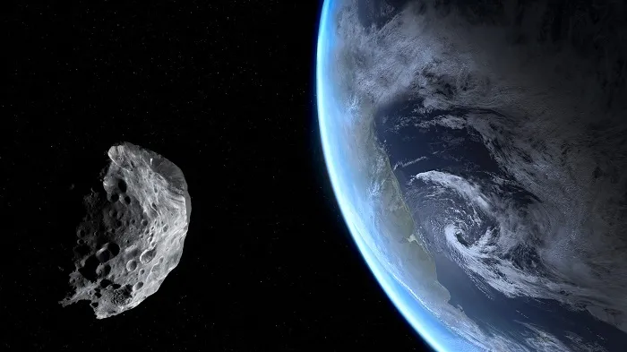
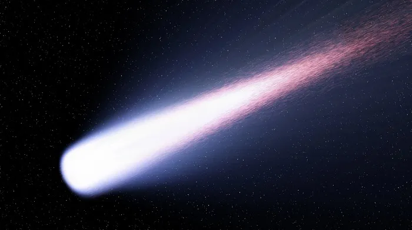
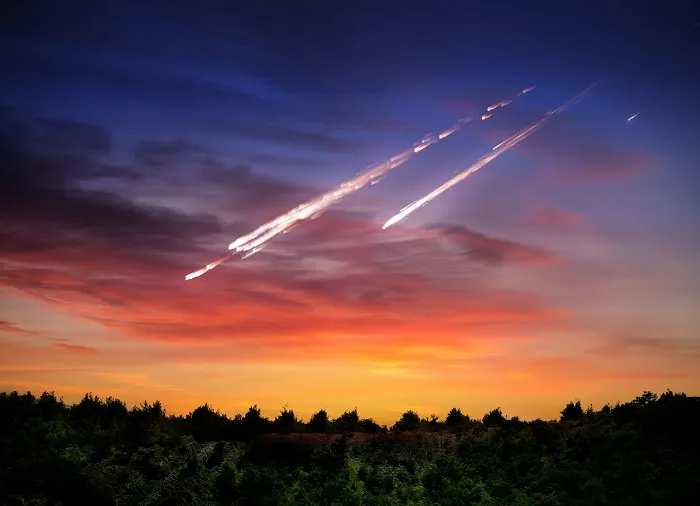

GALERIA

Cometa Halley, Foto do Peru em 1910

Foto do cometa verde

Cratera de impacto em Winslow, Arizona, EUA.

meteorito ilumina os céus de Portugal.
Você já deve ter ouvido muitas histórias sobre rochas que vagam pelo espaço sideral e podem esbarrar com a
Terra em seu caminho! E muita gente se pergunta se eles são meteoros ou asteroides! Na verdade, podem
ser os dois. A diferença entre eles está em seu tamanho e na distância que estão da superfície do nosso planeta.
Um asteroide é definido pelos astrônomos como um pequeno pedaço de rocha orbitando o sol. Em
geral, eles estão no cinturão de asteroides, entre Marte e Júpiter, mas podem ser achados em outras regiões
do Sistema Solar.

Quando asteroides colidem uns com os outros, alguns pedaços deles se soltam, formando o que os cientistas
chamam de meteoroides. Ao entrarem na atmosfera terrestre, essas rochas são incendiadas
pelo atrito com o ar e se tornam meteoros, rastros luminosos que conseguimos ver no céu,
também conhecidos como estrelas cadentes.

A maioria dos meteoros é pequena e se desintegra ao entrar em contato com a atmosfera. Alguns, no entanto,
sobrevivem ao impacto e caem em algum lugar do nosso planeta. Essas pedras ganham o nome de
meteoritos, que ajudam os pesquisadores a entender mais sobre o nosso Sistema Solar.

• Sempre que um cometa periódico orbita em distâncias próximas ao Sol, sua massa é diminuída pelo processo
de sublimação do gelo (sublimação: passar diretamente do estado sólido ao gasoso). A radiação solar
intensa é responsável por transformar o gelo dos cometas, formado por água, gás metano, amônia e dióxido
de carbono, em gases, que dão origem as suas longas caudas. É por esse motivo que todo cometa pode
simplesmente desaparecer após alguns milhares de anos.
• Todo cometa possui uma pequena atmosfera chamada de coma, que é formada pela sublimação dos gases pela
radiação solar. A coma estendida pelo vento solar forma a cauda dos cometas.
• Sabe-se que milhões de meteoroides adentram a atmosfera terrestre diariamente, no entanto, pouquíssimos
conseguem chegar até nós por causa da sua grande velocidade e do grande atrito com a atmosfera
terrestre.
• Estima-se que cerca de 100 toneladas de cometas e asteroides caiam em direção à Terra todos os dias.
• Dados astronômicos indicam que, durante toda a sua história cosmológica, a Terra foi atingida por
asteroides do tamanho de um campo de futebol, em média, a cada 2000 anos.
• Todos os anos um asteroide de tamanho similar ao de um carro de passeio entra na atmosfera terrestre, no
entanto, são raros os que conseguem chegar à superfície da Terra.
• Alguns asteroides possuem massas tão grandes que podem ter até mesmo suas próprias luas.
• Um dos mais maiores e mais famosos asteroides conhecidos do Sistema Solar chama-se Ceres. Ele é
comumente classificado como um planetoide em virtude da sua extensão de 952 quilômetros.
• Estima-se que a cada 10 milhões de anos a Terra seja atingida por asteroides com mais de 5 quilômetros
de extensão.
• Um asteroide de tamanho similar a um carro de passeio atinge a atmosfera terrestre com energia similar à
da explosão produzida pela bomba atômica lançada em Hiroshima, no Japão: cerca de 15 quilotons, o
equivalente à detonação de 15 mil toneladas de dinamite.
• Em 1908, em Tunguska, na Rússia, um asteroide de algumas dezenas de metros destruiu uma enorme região
florestal de 2150 quilômetros quadrados (uma área do tamanho do arquipélago de Açores). O asteroide em
questão não chegou a colidir com o solo. Toda a destruição foi causada pelo deslocamento de ar do
asteroide, que explodiu entre 5 e 10 quilômetros de altura, com energia próxima de mil bombas nucleares:
30 megatons.
• Um meteorito chamado Hoba foi encontrado na Namíbia, no continente africano. Ele caiu na Terra há 80.000
anos, e sua massa, constituída principalmente de Níquel e outros metais, é de cerca de 60 toneladas.
• A velocidade de entrada dos asteroides na Terra depende bastante do seu formato, no entanto, há casos em
que esses corpos chegam até nós com velocidades superiores a 72 quilômetros por segundo, cerca de
259.000 km/h.
• O site Purdue.edu oferece simulações interativas para calcular o efeito do impacto de asteroides na Terra.